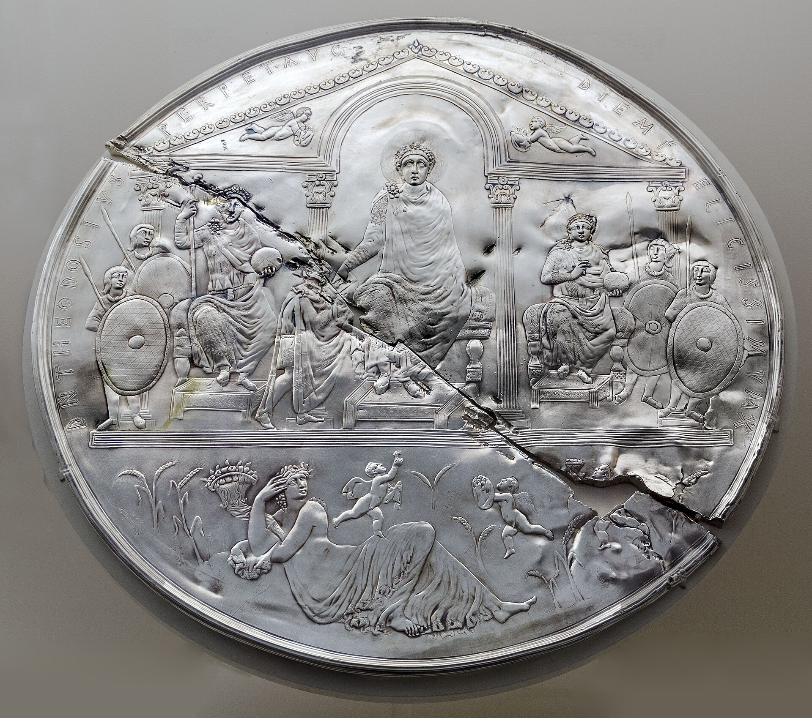
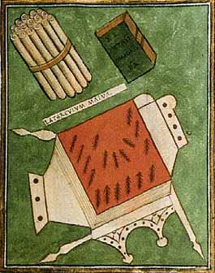
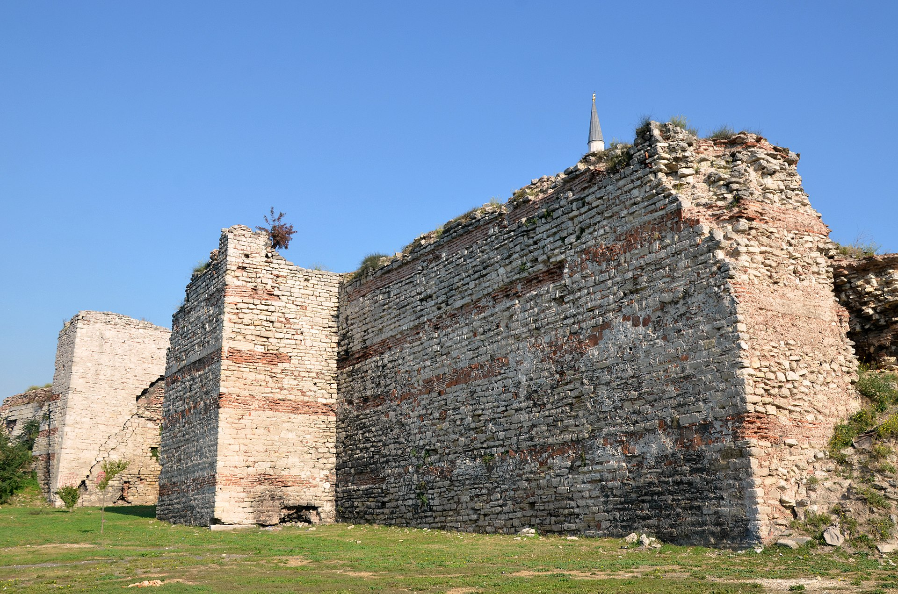

Flavius Marcellinus
Minor Bureaucrat · Constantinople

You are a product of the late Roman world — Christian, Greek-speaking, a minor functionary in an empire that would have been unrecognizable to Augustus.
Childhood. Your father, Flavius Eutropius, was a tabularius — a record-keeper in the provincial tax administration of Bithynia. Your mother, Eusebia, was the daughter of a minor local landowner. You grew up in Nicomedia, which had been Diocletian's imperial capital just seventy years before your birth but was now a declining provincial city. You were baptized as a Christian infant — by your generation, this was the norm, not the exception. Theodosius I would make Nicene Christianity the sole legal state religion in 380 AD, when you were five.
Education. Your father scraped together the fees to send you to a grammaticus and then a rhetor in Nicomedia. You studied Latin (the language of law and administration) in addition to your native Greek. You read Virgil, Cicero, and Homer, but your education was primarily aimed at securing a post in the imperial bureaucracy — the late Roman state was vastly larger than the early empire, employing tens of thousands of bureaucrats organized into elaborate hierarchies.
Constantinople. At twenty, you moved to Constantinople, the new eastern capital, founded by Constantine fifty years before your birth. The city was booming — approaching half a million people, full of new churches (Hagia Sophia, though a smaller version than Justinian's later masterpiece), forums, baths, hippodromes, and government offices. You secured a junior position in the scrinium memoriae — the office responsible for drafting imperial responses to petitions — through a connection of your father's. Your salary was modest and often paid late. You supplemented it with small bribes and fees, which was standard practice.
The Battle of Adrianople (378 AD) and its aftermath. When you were three, the Visigoths, who had been admitted into the empire as refugees from the Huns, revolted after being abused by corrupt Roman officials. At Adrianople (modern Edirne), on August 9, 378, they destroyed the eastern Roman army and killed the emperor Valens. You grew up in the shadow of this disaster. For your entire adult life, Gothic foederati (federated barbarian troops) were a permanent, uneasy presence in the eastern empire — sometimes fighting for Rome, sometimes against it. Alaric, who would sack Rome in 410, was a product of this system.
The fall of Rome and the divided empire. On August 24, 410, Alaric's Visigoths sacked Rome. You were thirty-five, living in Constantinople, and the news sent shockwaves through the eastern empire. The Christian theologian Jerome, in Bethlehem, wrote: "The city which had taken the whole world was itself taken." But Constantinople was secure behind its massive walls. The eastern and western halves of the empire had been governed separately since 395, and by your lifetime, they were effectively separate states. You served the eastern emperor — first Arcadius, then Theodosius II. The western empire, you understood dimly, was unraveling.
Marriage and domestic life. You married Anastasia, the daughter of a fellow bureaucrat, at twenty-five. You had three children; one died in infancy. You lived in a modest house in one of Constantinople's residential quarters, attended the local church on Sundays and feast days, and dined on bread, olives, fish, and wine — a diet essentially continuous with the Roman past but now consumed in a thoroughly Christian social context. You owned one slave, an older woman who cooked and cleaned.
Religion and controversy. Christianity dominated your life in ways that would have baffled a first-century Roman. You attended church regularly. You had opinions about the Christological controversies that convulsed the empire — were you Nicene? Arian? By your time, Arianism was fading but not dead, and the next generation's great controversy (the Nestorian dispute) was already germinating. The bishop of Constantinople was a political figure as powerful as any general. Monks roamed the city. Pagan temples were being dismantled or converted; you watched the Serapeum's remaining stones being carted off.
Death. You died around 421 AD, of uncertain cause — perhaps one of the periodic plagues that struck Constantinople, perhaps simple illness. You were buried in a Christian cemetery. Your surviving son inherited your bureaucratic connections and secured his own post. The eastern empire — what we call the Byzantine Empire, though its inhabitants always called themselves Romans — would endure for another thousand years.


What shaped this life
The transition from pagan to Christian Rome, the division of the empire, the Gothic crisis, the vast late-Roman bureaucracy, and the emergence of Constantinople as the center of gravity of the Roman world — an empire that had moved east, spoken Greek, and worshipped Christ, but still called itself Rome.
- Battle of Adrianople (378)
- Sack of Rome (410)
- Notitia Dignitatum
- Missorium of Theodosius I
- Walls of Constantinople
The images above are real museum artifacts and photographs, or commissioned illustrations; full attribution on the credits page.